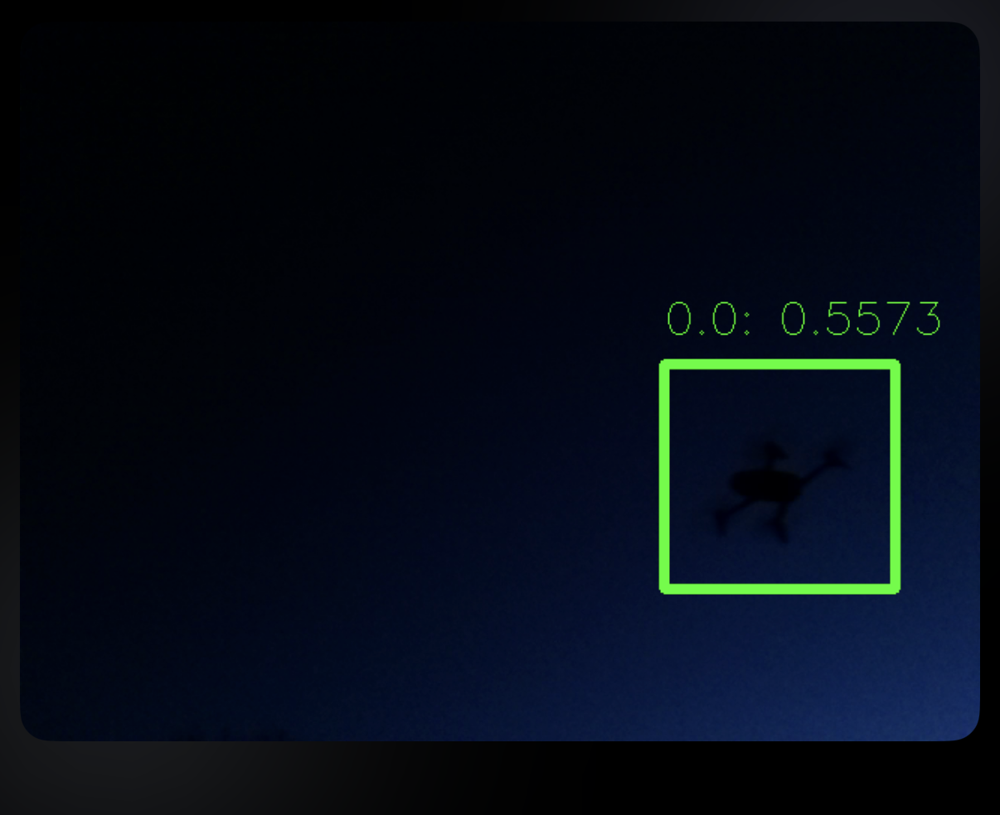
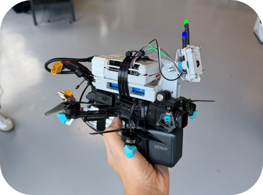
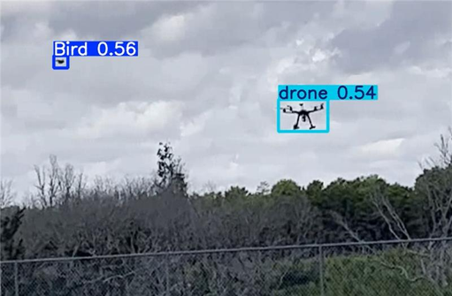
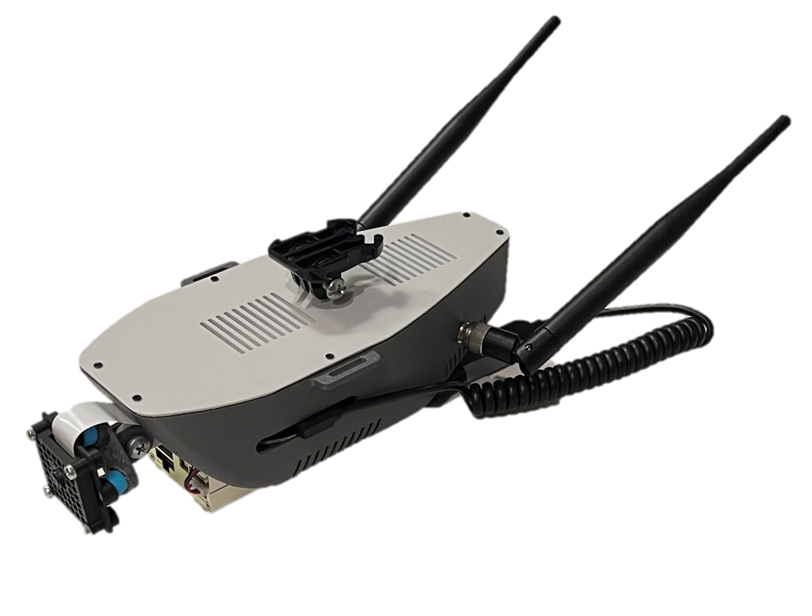

01
Visual navigation
Pose estimation, target tracking, inspection cues, and proximity-operations awareness for cooperative and non-cooperative objects.
Edge perception · space + air
Technetium turns imagery into detection, pose, and RTOS-aware action for targets that are unknown, distant, or hard to see.
Aerospace Corporation imagery with SatViz pose estimation on a fully unknown object.
What we build
We focus on the hard middle layer: perception that can be integrated into the platform, validated before flight, and trusted enough to inform autonomous behavior.
Pose estimation, target tracking, inspection cues, and proximity-operations awareness for cooperative and non-cooperative objects.
Scene understanding and reconstruction pipelines that support geometry recovery, inspection, and change detection.
Low-SWaP payloads and AI models for drone detection, tracking, and discrimination in field imagery.
Synthetic scenes, sensor effects, lighting sweeps, and failure-case generation for faster testing before field deployment.
Decision loops designed around timing, telemetry, watchdogs, safe fallback behavior, and embedded-system constraints.
Operationally grounded engineering support for system integration, test planning, and mission-readiness evaluation.
SatViz
SatViz is designed to estimate state from imagery when a mission does not have a clean CAD model, cooperative markers, or ideal lighting. It converts vision into information the spacecraft can use: detection, tracking, pose, confidence, and guidance-relevant context.
DroneViz
DroneViz packages detection hardware and software for teams that need a deployable perception payload rather than a lab-only demo.



DroneViz can stream detection data and payload status to the ground over MAVLink, the lightweight drone messaging protocol used between aircraft, onboard components, and ground-control systems.

Digital twin + embedded validation
Autonomy fails in the gaps between beautiful demos and real operating constraints. Technetium uses synthetic data, simulation, hardware-in-the-loop thinking, and flight-test discipline to expose those gaps early.
Inspection, proximity operations, on-orbit servicing, and visual navigation.
Small-object detection, edge sensing, payload integration, and field validation.
Digital twin generation, perception test campaigns, and autonomy experiments.
Start a mission conversation
Share the sensor, environment, target type, platform constraints, and the decision the system needs to support. We will respond with a practical integration path.
info@technetiumengineering.com